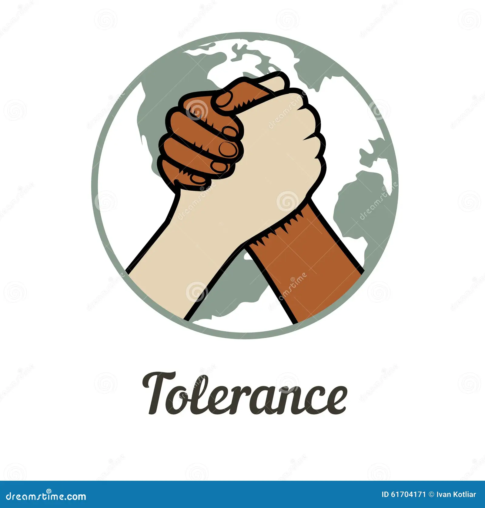

Mis Valores
Solidaridad
DEFINICiÓN:La solidaridad es en principio un sentimiento de apoyo a otros, especialmente cuando se encuentran en situación de vulnerabilidad, que se manifiesta en actos y palabras. Ser solidario es uno de los principales rasgos psicológicos y sociológicos de la humanidad.
La solidaridad implica empatía, sentido de pertenencia a una comunidad, pero también capacidad para apoyar a otros y para ir más allá de las diferencias sociales y culturales, saber “ponerse en el lugar del otro”.
Existe solidaridad cuando en un grupo existen valores e intereses comunes, que unen a grupos de personas que van tras un mismo objetivo, o comparten problemas y actividades, como la que existe en trabajadores de un mismo ramo u oficio.
Sencilles
La sencillez (también llamada llaneza o modestia) es un valor moral que implica la falta de arrogancia, vanidad o ambición, es decir, un concepto cercano a la humildad. Las personas dotadas de sencillez no suelen hacer alarde de lo que poseen o de lo que hicieron, ni se piensan en un peldaño superior al resto.
Este uso de la palabra se conserva hoy en día de manera figurada, pues por “sencillo” también se puede entender aquello que es menudo, fácil o de pocas complejidades..
Tolerancia
se refiere a la acción y efecto de tolerar. Como tal, la tolerancia se basa en el respeto hacia lo que es diferente, y puede manifestarse como un acto de indulgencia ante algo que no se quiere o no se puede impedir, o como el hecho de soportar o aguantar a alguien o algo.

El Cambio
es la acción de transformar una cosa en otra, abandonar una cosa o situación por otra, o intercambiar alguna cosa por otra que se considera de un valor semejante.
El cambio es intrínseco del tiempo, es decir, que dada una cantidad adecuada de tiempo, todas las cosas tienden a cambiar de un modo u otro. Sin embargo, los períodos necesarios para que suceda pueden ser muy distintos, dependiendo de si consideramos una roca, una nube o una planta.
El Realismo moral
El realismo moral es una postura filosófica que defiende la existencia objetiva de los hechos morales. Es decir, sostiene que, independientemente de las propiedades subjetivas, cognitivas o sociales; las premisas y las acciones morales tiene una realidad objetivamente verificable.
Para el realismo moral, existen afirmaciones morales que son objetivamente verdaderas, de lo que se puede extraer la siguiente conclusión: hay personas y acciones que son, en términos objetivos, moralmente buenas, malas, honestas, poco amables, etc.
.jpg)